Размышление о том, где заканчивается модель, начинается агент, зачем нужны workflow и harness, и почему в конечном счёте разговор об искусственном интеллекте приводит нас к вопросу о смысле.
Последние несколько лет разговоры об искусственном интеллекте всё чаще сводятся к сравнению моделей: какая модель умнее, какая быстрее, какая лучше пишет код, у какой больше контекст.
Но чем больше я работаю с LLM, тем сильнее убеждаюсь: сама модель — только часть системы.
Иногда далеко не самая интересная.
К этому выводу я пришёл довольно простым путём. Сначала пытался разобраться, чем отличаются ChatGPT Chat, Work, Codex, Cursor, Claude Code, OpenCode и прочие современные инструменты. Потом возник вопрос: что вообще делает программу «агентом»? Затем — чем универсальный агент отличается от специализированной системы автоматизации?
И в конце эта цепочка неожиданно привела к гораздо более фундаментальному вопросу:
что мы вообще называем пониманием смысла — и почему именно здесь LLM оказывается настолько полезной?
Начнём с простого.
LLM сама по себе — это ещё не агент.
Можно представить её как чрезвычайно мощный вычислительный компонент.
Она получила информацию, что-то с ней сделала и выдала продолжение.
Но если мы хотим сказать модели:
Найди ошибку в проекте, исправь её, собери программу, запусти тесты и убедись, что ничего не сломалось.
одной LLM уже недостаточно.
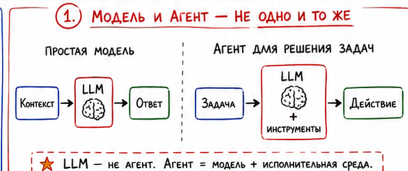
Ей нужны «руки».
Например:
read_file()
write_file()
search()
shell()
git()
browser()
database()
Кроме того, необходима программа, которая организует взаимодействие модели с этими инструментами.
В самом простом виде:
получить задачу
↓
передать её LLM
↓
LLM решила вызвать инструмент
↓
выполнить инструмент
↓
результат вернуть LLM
↓
LLM выбирает следующий шаг
↓
...
↓
задача выполнена
Вот эта окружающая модель инфраструктура и называется agent harness — агентная обвязка, или исполнительная среда агента.
Если пользоваться совсем бытовой метафорой:
LLM — мозг. Harness — тело, руки, органы чувств и правила поведения.
Но инженерно это гораздо интереснее.
Вызвать shell("gcc main.c") несложно.
Сложность начинается раньше:
Когда вообще надо вызвать GCC?
А потом:
Что именно собрать? Где лежит проект? Как интерпретировать ошибку компилятора? Нужно ли читать другой файл? Стоит ли повторить попытку? Когда задача считается выполненной?
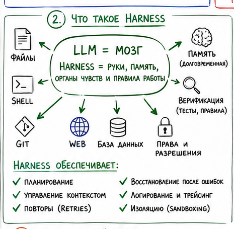
Поэтому зрелый harness включает уже не только набор инструментов.
В нём появляются четыре взаимосвязанные группы механизмов:
И становится понятным интересный эффект:
Одна и та же LLM в разных агентных программах может показывать очень разное качество работы.
Модель одна.
Но один агент хорошо подбирает контекст, умеет искать нужные файлы, правильно обрабатывает ошибки и проверяет результат.
Другой зацикливается, читает ненужные мегабайты данных и начинает уверенно чинить несуществующую проблему.
Поэтому benchmark современных coding agents фактически измеряет уже связку:
MODEL + HARNESS
а не только интеллект модели.
Особенно хорошо это видно на примере современных coding agents.
Технически их возможности всё сильнее пересекаются. Они умеют работать с локальными файлами, shell, Git, тестами, большими кодовыми базами.
Но исторически у них разные центры тяжести.
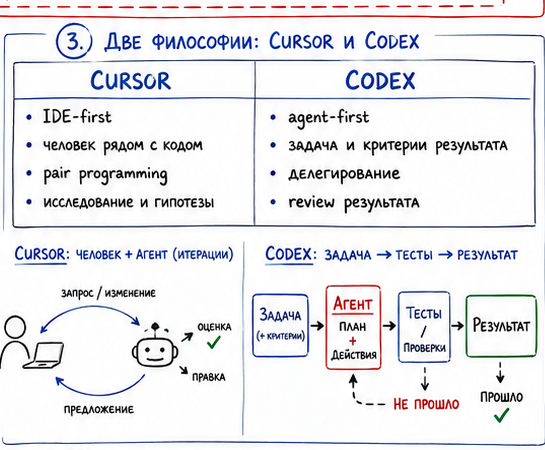
Типичная модель работы.
Человек исследует проект, открывает файлы, смотрит функцию, формирует гипотезу, просит агента внести изменение, запускает эксперимент.
Это близко к pair programming.
Такой режим особенно хорош там, где решение заранее неизвестно.
Например:
Почему реализация криптографического алгоритма выдаёт только 60% ожидаемой производительности?
Процесс может выглядеть так:
benchmark
↓
profile
↓
гипотеза
↓
изменение кода
↓
новый benchmark
↓
assembler
↓
новая гипотеза
↓
следующий эксперимент
Здесь человеческая инженерная интуиция является частью алгоритма поиска решения.
Другая модель.
Человек всё меньше думает о том, какую строку изменить прямо сейчас, и всё больше — о критериях результата.
Например:
Перевести старый logging API на новый во всём проекте. Публичный API не менять. Deprecated-код удалить. Все тесты должны проходить.
Это практически идеальная агентная задача.
Критерии формализованы:
старый API отсутствует
+
новый API используется
+
build succeeds
+
tests pass
Отсюда возникает интересный методологический переход:
от AI-assisted programmer к engineer managing programming.
Разработчик начинает больше заниматься архитектурой, контрактами, acceptance criteria, инвариантами и проверяемостью.
На этом месте легко совершить следующую ошибку.
Можно решить:
Раз универсальный агент умеет читать файлы, вызывать shell, ходить в интернет и работать с базами данных, значит надо просто дать ему всё — и пусть решает любые задачи.
Но это далеко не всегда хорошая инженерия.
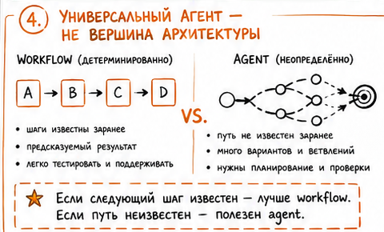
Если процесс заранее известен, нет смысла каждый раз заставлять LLM заново его изобретать.
Допустим, мы создаём систему автоматического документирования исходного кода.
Процесс известен:
найти C/C++ файлы
↓
распарсить код
↓
выделить функции
↓
собрать контекст
↓
сгенерировать описание
↓
вставить Doxygen
↓
проверить неизменность кода
↓
сформировать отчёт
Почему LLM должна самостоятельно решать:
А сейчас мне лучше использовать grep или прочитать директорию?
Не должна.
Надёжнее написать этот процесс обычным кодом.
А LLM поставить туда, где она действительно нужна:
parser
↓
function context
↓
LLM: объяснить назначение функции
↓
validator
↓
result
Получаем гибрид:
детерминированная автоматизация + LLM там, где она даёт дополнительную ценность.
Это различие, на мой взгляд, принципиально.
Мы знаем последовательность:
A → B → C → D
Её надо запрограммировать.
Следующий шаг заранее неизвестен:
A
↓
что произошло?
├── B
├── C
├── D
└── неизвестная ситуация → исследовать
Здесь уже полезен reasoning loop.
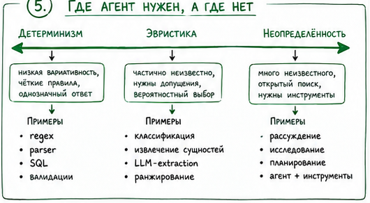
Поэтому зрелая архитектура часто выглядит так:
WORKFLOW
│
┌─────────┼─────────┐
▼ ▼ ▼
обычный код LLM обычный код
parser semantics validator
│
└──────┐
▼
Agent
только если возникла
неопределённость
Это очень далеко от идеи:
«Дадим нейросети shell и пусть делает всё».
Хороший программист обычно сначала пытается понять сам процесс.
Он задаёт вопросы:
Что является входом?
Какой должен быть выход?
Какие этапы полностью формализуемы?
Какие ошибки возможны?
Что можно проверить автоматически?
Где требуется экспертная оценка?
Где появляется неопределённость?
И только после этого появляется вопрос:
Где здесь нужна LLM?
Плохая архитектура начинается с противоположного конца:
У нас есть LLM. Что бы ей поручить?
Это кажется небольшой разницей, но она фундаментальна.
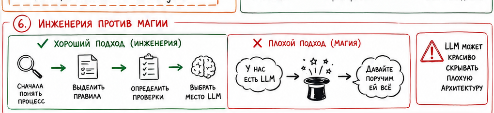
Первый подход:
проблема → архитектура → подходящий инструмент
Второй:
инструмент → поиск проблемы
И проблема современных LLM в том, что они слишком хорошо маскируют архитектурные ошибки.
Обычная программа при плохом проектировании часто честно падает:
Segmentation fault
LLM-система может вместо этого уверенно сообщить:
«Я завершила анализ и выявила следующие риски…»
Текст выглядит профессионально.
Но никто не гарантирует:
Это куда опаснее обычного исключения.
Для себя я сформулировал это так:
LLM не отменяет проектирование алгоритма. LLM становится одним из компонентов алгоритма.
То есть не:
PROCESS = LLM
а:
PROCESS =
deterministic logic
+ domain knowledge
+ rules
+ tools
+ LLM
+ verification
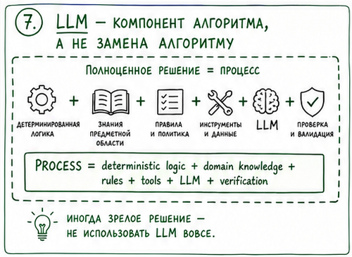
Причём иногда признаком хорошей инженерии является решение не использовать LLM вообще.
Например:
Найти во всех документах неправильное написание конкретного идентификатора.
Regex сделает это:
LLM тут только ухудшит архитектуру.
Но возникает другой вопрос:
Эти два раздела документа противоречат друг другу по смыслу?
Regex внезапно перестаёт помогать.
И мы подошли к слову, которое постоянно всплывает в разговорах о LLM.
Смысл.
В бытовом разговоре легко сказать:
LLM нужна там, где нужен смысл.
Но технически это звучит слишком расплывчато.
Более точная формулировка:
LLM полезна в задачах контекстно-зависимой семантической интерпретации данных, когда необходимое отображение трудно полностью выразить детерминированными правилами.
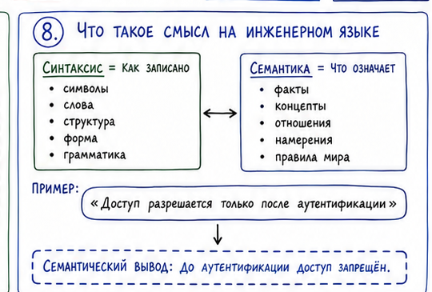
Слово семантика означает значение.
Есть простое разделение:
синтаксис — как записано; семантика — что означает.
Например:
«Доступ разрешается только после аутентификации».
Синтаксический анализ может найти:
Семантический вывод:
до аутентификации доступ запрещён.
Ещё интереснее:
«Идентификация должна выполняться до предоставления функций системы».
и:
«После запуска пользователь может открыть административную консоль до процедуры входа».
По словам это совершенно разные предложения.
Но по смыслу между ними потенциально существует противоречие.
Это и есть задача семантического сопоставления.
И здесь появляется самый интересный вопрос.
LLM ведь не человек.
Она не сидела за компьютером.
Не вводила пароль.
Не держала ключ.
Не испытывала ощущение холода.
Как она вообще может «понимать», что означают слова?
Ответ парадоксален.
Формально LLM учится чрезвычайно простой задаче:
предсказывать следующий токен.
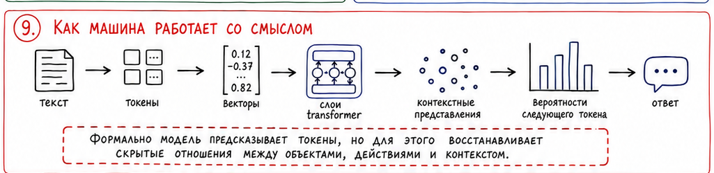
Но чтобы хорошо предсказывать текст в миллиардах различных ситуаций, недостаточно знать частоту слов.
Модель вынуждена восстанавливать огромное количество скрытых зависимостей.
Например:
кошка → животное
Париж → Франция
AES → шифрование
аутентификация → подтверждение личности
Но главное — отношения между ними.
Во внутренних представлениях модели возникают структуры, отражающие:
Слово «ключ» в предложении:
«потерян ключ от квартиры»
и в предложении:
«скомпрометирован криптографический ключ»
будет представлено моделью по-разному.
Потому что значение определяется контекстом.
Вот здесь инженерия заканчивается и начинается философия.
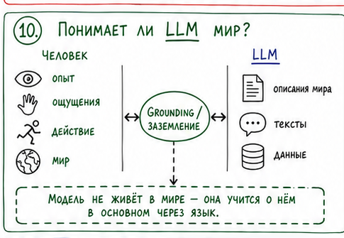
Если под пониманием подразумевать:
сознательное человеческое переживание смысла,
то утверждать, что LLM понимает мир именно так, у нас нет оснований.
У человека значение слова «лёд» связано не только с текстами.
Он знает лёд через мир: зрение, осязание, температуру, движение и личный опыт.
LLM в основном узнаёт о мире через его описания: мир → человеческий опыт → язык → данные → LLM.
Получается своеобразная тень мира, отбрасываемая в язык.
И вот что удивительно:
эта тень содержит невероятно много информации.
Настолько много, что система, научившаяся хорошо моделировать язык, неожиданно приобретает способность:
Формально она продолжает предсказывать токены.
Функционально — ведёт себя так, будто оперирует значениями.
Мне здесь нравится одна мысль.
Мы часто представляем смысл как нечто спрятанное внутри слова.
Как будто где-то существует отдельная коробочка со «смыслом ключа».
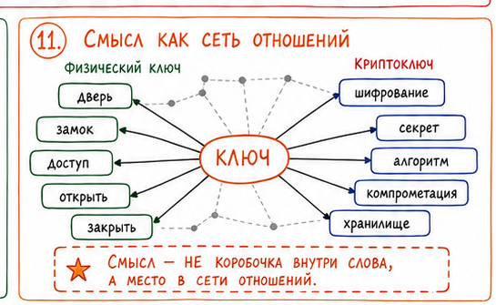
Но, возможно, полезнее представлять смысл как место объекта в огромной сети отношений.
«Ключ» означает то, что означает, потому что связан с дверью, замком, доступом, секретом, владением, открытием и закрытием.
Криптографический ключ связан уже с другой сетью: шифрованием, секретностью, алгоритмом, доступом, компрометацией и хранилищем.
LLM как раз чрезвычайно хорошо умеет восстанавливать такие сети отношений.
Не потому, что кто-то явно запрограммировал:
meaning("ключ") = ...
А потому, что эти отношения миллиарды раз проявлялись в данных.
В каком-то смысле модель не получает готовый смысл.
Она реконструирует его по следам, которые смысл оставил в языке.
И это, пожалуй, гораздо интереснее банальной фразы:
«нейросеть просто угадывает следующее слово».
Да, угадывает.
Но чтобы угадывать достаточно хорошо, ей приходится построить внутри себя удивительно богатое приближение к структуре языка — а через язык и к некоторым структурам мира.
Всё это не делает LLM магией.
Наоборот.
Чем лучше мы понимаем её сильные стороны, тем проще определить её правильное место в системе.
Можно представить своеобразную шкалу:
полностью формализуемая задача
↓
обычный алгоритм
↓
parser / regex / SQL
↓
статистическая классификация
↓
ML
↓
контекстная семантическая интерпретация
↓
LLM
↓
неопределённая последовательность действий
↓
Agent + tools
И главное инженерное искусство здесь заключается не в том, чтобы поставить LLM как можно выше.
А в том, чтобы правильно провести границу.
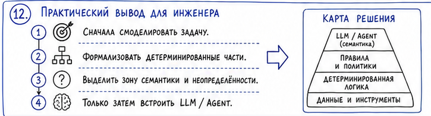
Начав разбираться с агентами, я сначала увидел инструменты.
read
write
shell
browser
database
Потом увидел harness — программу, которая превращает LLM в исполнителя.
Потом выяснилось, что универсальный агент не отменяет специализированные системы.
Следом оказалось, что большую часть хорошо известного процесса вообще лучше оставить обычному программному коду.
И в итоге остался довольно простой вопрос:
А где же тогда действительно нужна LLM?
Ответ постепенно свёлся к одному слову:
смысл.
Но уже не в мистическом значении.
А в вполне инженерном:
там, где система должна установить контекстные семантические отношения, которые трудно исчерпывающе формализовать набором правил.
И поэтому, возможно, зрелое отношение к ИИ выглядит не как:
«Теперь нейросеть всё сделает за нас».
И даже не как:
«Надо добавить AI в наш продукт».
А гораздо спокойнее:
Вот наша задача. Вот её структура. Вот то, что мы умеем формализовать. Вот то, что надёжно решается обычным кодом. Вот зона неопределённости. А вот здесь действительно появляется место для LLM.
И мне кажется, что именно с этого момента заканчивается вера в магию искусственного интеллекта.
И начинается инженерия.